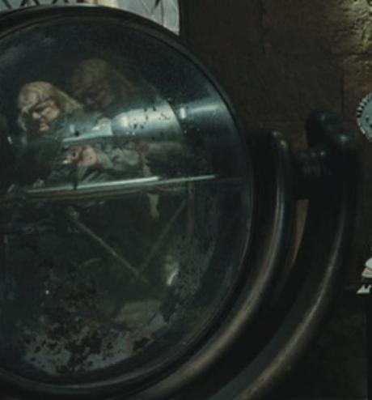
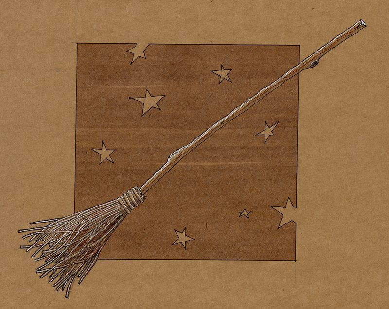
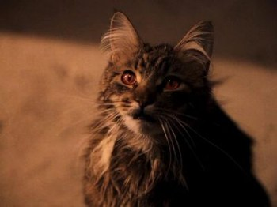

Glace à l'ennemi

Accessoire commun
Détecteur de magie noire (1 utilisation) : - S'applique à vos deux voisins de jeu : la cible doit vous indiquer si elle est un Ennemi.
Tu les vois, là, qui rôdent tout autour ? Je ne risque pas grand-chose tant que je ne vois pas le blanc de leurs yeux.
Glace à l'ennemi
Accessoire commun
Détecteur de magie noire (1 utilisation) : - S'applique à vos deux voisins de jeu : la cible doit vous indiquer si elle est un Ennemi.
Tu les vois, là, qui rôdent tout autour ? Je ne risque pas grand-chose tant que je ne vois pas le blanc de leurs yeux.
Brossdur 11

Accessoire commun
- Lors de votre déplacement, lancez les dés ou déplacez vous d'une case.
Gants de démalédiction

Accessoire rare
- +1 de défense.
- Ensemble complet de démalédiction : si vous avez la Coiffe de démalédiction, la Cape de démalédiction et les Gants de démalédiction équipés en même temps, le bonus de défense passe à 2 au lieu de 1.
- Equipement fragile : Si vous passez au SdM avec cet objet équipé, le bonus de défense est annulé. Vous pouvez annuler ça en lui octroyant une charge d'utilisation.
Miss Teigne

Accessoire rare
- Regard perçant : Annule les malus de portée subis si le défenseur est à 1 de portée ou moins de vous.
- Compagnon (1 blessure)
Marque des Ténèbres

Accessoire rare
- Réservé aux Antagonistes, ne peut être vendu, ne peut être défaussé si équipé.
- Au lieu d'attaquer, vous pouvez activer votre Marque des Ténèbres. Jusqu'à votre prochain tour, tous les autres détenteurs d'une Marque des Ténèbres peuvent se téléporter sur votre case au lieu de se déplacer.
Marque des Ténèbres
Accessoire rare
- Réservé aux Antagonistes, ne peut être vendu, ne peut être défaussé si équipé.
- Au lieu d'attaquer, vous pouvez activer votre Marque des Ténèbres. Jusqu'à votre prochain tour, tous les autres détenteurs d'une Marque des Ténèbres peuvent se téléporter sur votre case au lieu de se déplacer.